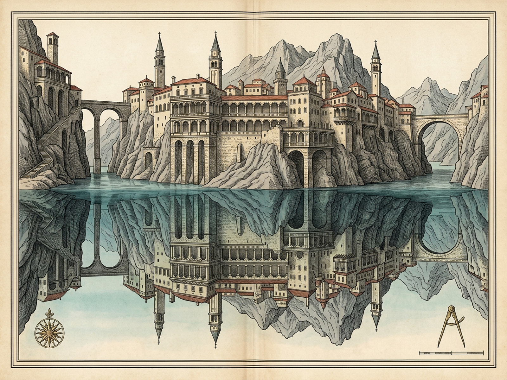
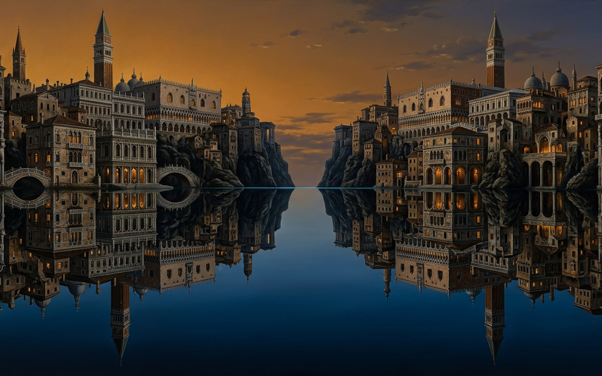

Chapter III • Cities & Eyes 1
Valdrada
Built on an ancient lakeshore: one city erect above the water, one inverted point-by-point below.
CTest Forgetfulness
WSeek Mutual Love
LLimpidity 0.94
MCanon On
VMotion Full
RReset
PPlates
1
Parapet
Railed high-street overlook
DENIED
2
Hallway
Coffered ceiling & tiled floor
INCR
3
Wardrobe
Beveled wardrobe mirror cone
INCR
4
Scales
Stacked arcaded loggia
DENIED
5
Cliffshore
Ancient limestone footing
INCR
6
Lovers
Amber-gilded twining contours
INCR
7
Knife Vein
Blade in black neck tendons
INCR
ERECT CLIFFSIDE • 4 STACKED VERANDA TIERS ABOVE WATERLINE
RECURSIVE WARDROBE MIRROR × LAKE
Sightline locked on lake surface
EYES INTERLOCKED • MUTUAL LOVE: 0.00 • SYMMETRY: FALSE
INVERTED ABYSS • CHILLED SPECULAR TWIN BELOW WATERLINE
Canon Axis D4 (293.66 Hz) • Phase -1
STONE I • RAILED PARAPETS
TIER II
Arriving Traveler's High-Street Parapet
Erect Veranda Weight
0.84
Cantilevered high-street walkways with wrought-iron railed parapets where the arriving traveler leans over the water.
Inverted Lake Weight
0.19
Inverted iron balustrades answering point-by-point below while stripping away the traveler's proud certainty.
MIRROR VERDICT: DENIED
Δ -0.65 • SYMMETRY: FALSE
At times the mirror increases a thing's value, at times denies it. Nothing happens in the one city without being repeated in the other.
Zero chance or forgetfulness • Click chamber or press [1-7, C, W, L, P]
Chance
0
Love
0.00
Intercept
0
Eye Lock
0.96
Diptych Folio
Survey Map (1600×1200)
City Elevation (1600×1000)
ZLoupe 1x
ESCClose

Survey Map — Stepped Ancient Lakeshore Cliff, Stacked Veranda Tiers & Obsidian Trench

Catoptric Elevation — Erect Cliffside Verandas Above & Point-by-Point Inverted Lake Twin Below
Archival copperplate file could not be decoded from disk.